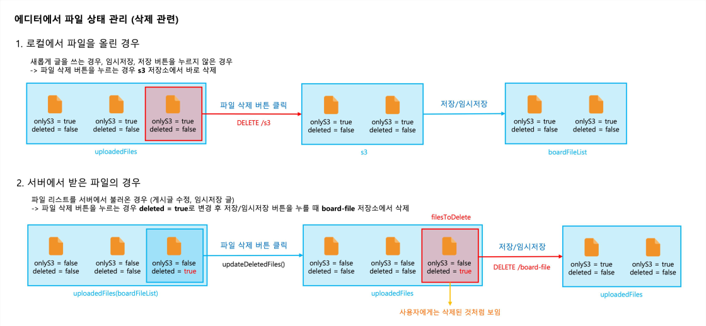
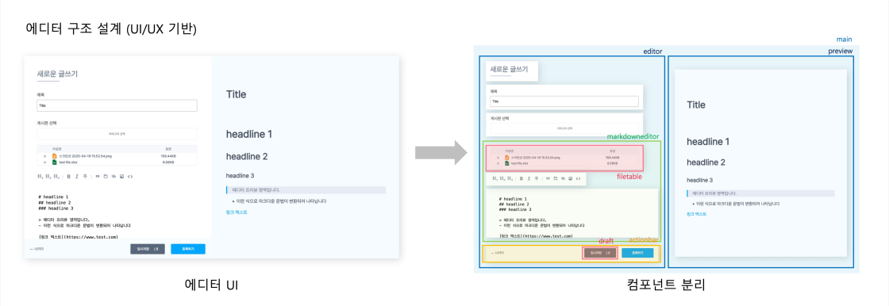
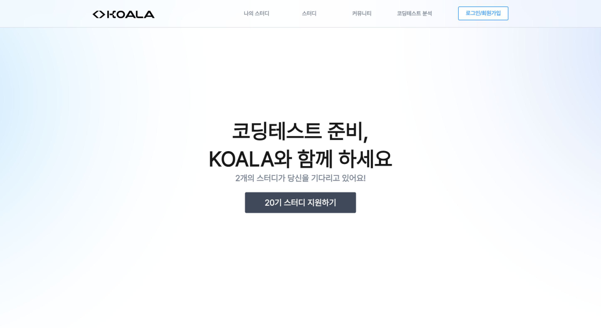

Koala
알고리즘 학회 서비스
한국항공대학교 알고리즘 학회 KOALA의 스터디 자동화를 위한 서비스입니다. 2024년 7월부터 2025년 10월까지 개발했고, 14개월 동안 실제로 운영되었습니다.
- 역할
- 자율 스터디, 커뮤니티, 데일리 챌린지 기능을 기획하고 UI를 개발했습니다.
- 문제
- 서로 다른 목적의 글쓰기 기능이 존재했고, 에디터마다 중복 코드가 발생했습니다.
- 해결
- 공통 행동 패턴과 메타데이터 입력 요소를 분리해 6개의 추가 에디터를 빠르게 구현했습니다.
- 기술
- React, JavaScript, styled-components, CodeMirror